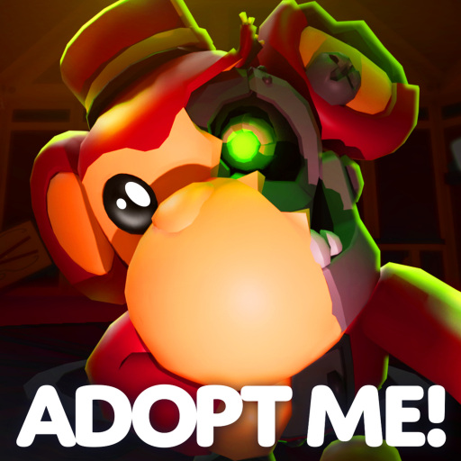

🦇 Adopt Me: Count Slothula ajunge vineri, 99 Robux și rămâne permanent

Adopt Me a anunțat oficial în Weekly News: Count Slothula e „aproape acasă”! 🦇👻
- 📅 Ajunge vineri, 23 octombrie
- 💸 Costă 99 Robux
- 🏪 Rămâne permanent în Pet Shop, și după Halloween
- 🎨 Vine și Sticker Pack 2
- 🧛 Pet wear nou cu colți
- 🐱 Casă și mâncare pentru pisica vagaboandă
- 🎁 Bonus de weekend, valabil până pe 31 octombrie
⏰ Adopt Me nu a dat ora exactă, doar ziua.
🆕 UPDATE (sâmbătă 24 oct, ~13:15 RO): pe pagina jocului Adopt Me sunt acum două evenimente oficiale:
- 🎃 ADOPT ME NEW UPDATE! – Halloween Week 4 (update-ul de vineri): a început vineri 23 oct, 18:05 RO, ține până vineri 30 oct, 17:45 RO
- 🎉 ADOPT ME ADMIN ABUSE! – Freebies & Chaos: azi, sâmbătă 24 oct, 19:00–19:30 RO
- 📅 Halloween Week 4: https://www.roblox.com/events/3734139826459509297
- 📅 Admin Abuse: https://www.roblox.com/events/6607388034369454862
Follow pe TikTok @vexu_online și abonare pe YouTube la VEXU Online. Follow = Au ce bile! 💥